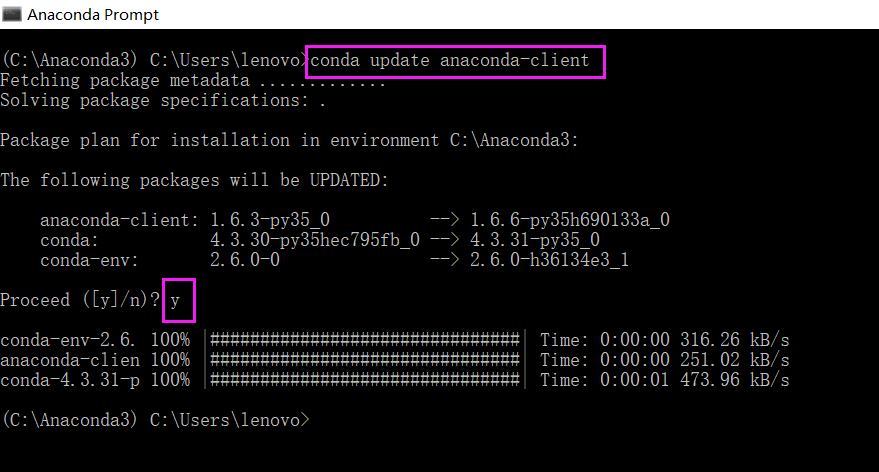

安装的Anaconda一段时间之后图标和启动器Navigator丢失的问题
作者：Ciin7mo 发布于：2025年3月21日
解决方案：
1.管理员身份运行Anaconda Prompt
2.执行命令 conda update anaconda-navigator
3.执行anaconda-navigator --reset
4.执行conda update anaconda-client

5.执行conda update -f anaconda-client
6.重启Navigator